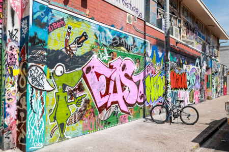

| About Darwin | Why Study in Darwin | Darwin Festival | Darwin Street Art Festival | Contact Me |
The Darwin Street Art Festival (DSAF) is an annual event located in the Darwin CBD, Waterfront and Cullen Bay. Since its inaugural event in 2017, dozens of multi-storey murals now adorn the walls of buildings, transforming previously derelict alleyways into colourful enclaves of public art. DSAF 2020 will feature live mural art, sculptures, 3D wall graffiti, spray paint and children’s art workshops. Its vision is to inspire and enliven the greater Darwin population through public art, while creating a sense of vibrancy throughout Darwin City.

As COVID-19 restrictions relieved, DSAF this year will see local artists turning the CBD walkways and buildings into stunning artworks of murals. A mural will be created every fortnight across Darwin from May until end of September, with a total of 15 murals completed throughout the festival. Territorians just need to keep a safe 1.5 metre from others when they stop by the street art trail. They can also watch the walls come alive throughout Darwin City when visiting local retailers, shop or dine in.
DSAF has created jobs for Territory local artists and provided opportunities for them to grow their skills. Before producing any murals on the streets of Darwin, local artists who intend to beautify the streets need to send their expressions of interests to DSAF authority. They will then be strategically paired with invited national artists and co-curators of the festival to collaborate and share their creative talent in order to meet and showcase the uniqueness of the Northern Territory. For instance, one of the local artists, Jason Lee painted an exceptional mural from a blank wall at 79 Mitchell Street. Born and raised in Darwin, Jason, a self-taught street artist, draws his artistic influences from his Larrakia ancestry, language and cultural practices. His artworks portray a mix of contemporary and traditional styles, and has been part of the festival since DSAF began in 2017.
Colourful graffiti and street art are in high demand across towns and cities around the world. Residents of towns and cities can view the fun, creativity and vibrancy of street artists and wall art, projected on the buildings and surfaces. Large-scale murals are becoming open-aired galleries where communities flock to watch the interpretations of walls that can talk. It has been great to see our local talent go on to produce artworks that gain recognition nationally and even internationally. Besides, DSAF 2020 is also one of the government funding on new infrastructure projects and a series of cultural initiatives, which will stimulate the economy, revitalise the Darwin CBD, and ensure that we are ready for the rebound post COVID-19.
If you would like to know more about the event, visit DSAF website or their Facebook for more details.